Harima, Hyogo: things to do, food and stays
Harima · Hyogo
Harima
Highlighted on the Hyogo map.
Stay
エバーホテルはりま加古川
E Bar Hotel Harima Kakogawa
Hotel in Minaminosoe, Harima with breakfast available; 5-minute walk from (Harimamachi Station.
Dining
レストラン ポプラ
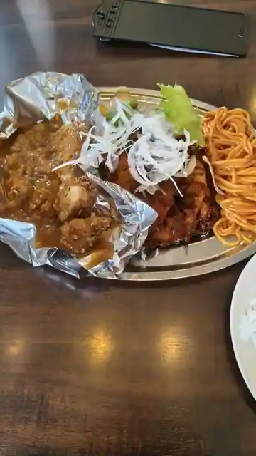
Restaurant Popura
木味土味
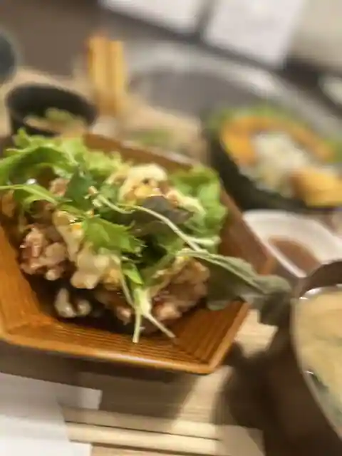
Ki Aji Tsuchi Aji
ぴか一 播磨店
Pika Ichi Harima
ステーキハウス おおくぼ 播磨本店
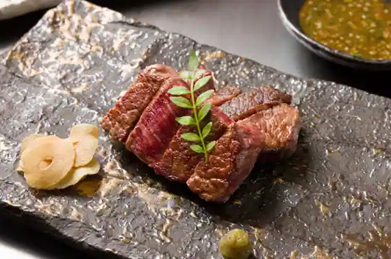
Steak House Okubo Harima Hon
麺屋 縁68
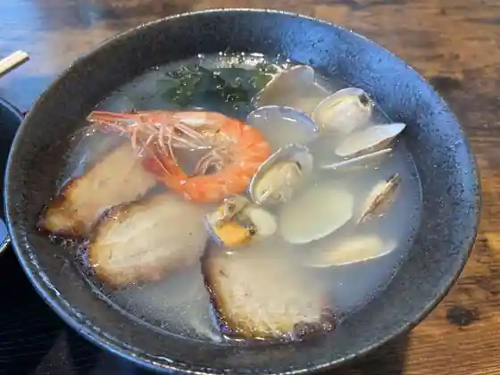
Men Ya Heri 68
木や
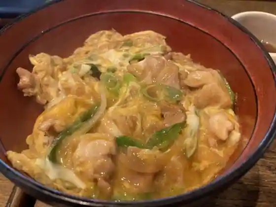
Ki Ya
鄙星
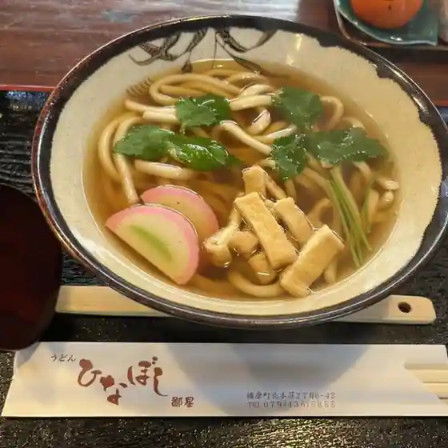
Hi Hoshi
つっちゃまのあんぱん
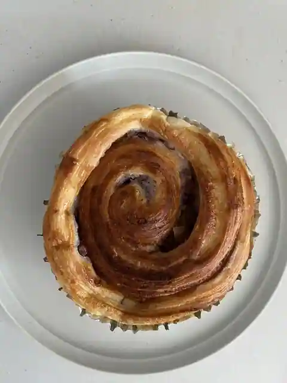
Tsutchamanoanpan
やきにく武蔵
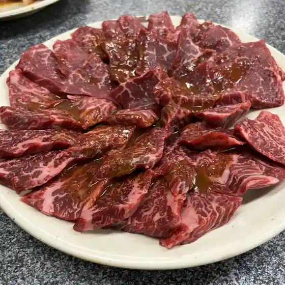
Yakiniku Musashi
ブランカ ブランカ
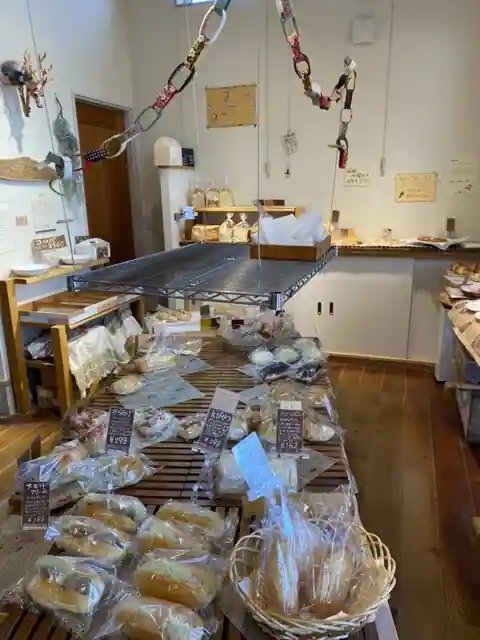
Buranka Buranka
花茶茶花
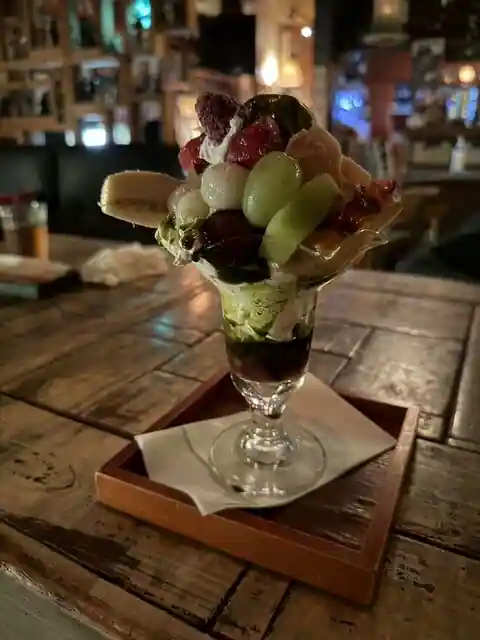
Hanacha Chabana
jamjam cafe
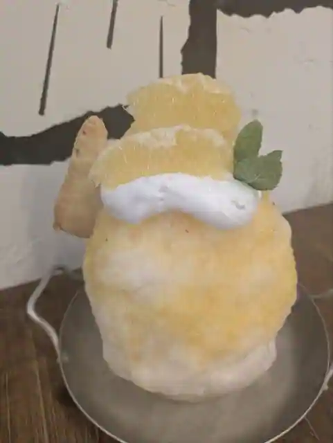
jamjam cafe
明日香 アールヌーボー店
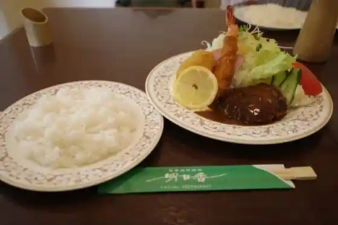
Asuka Arunubo
三善カレえぇ。
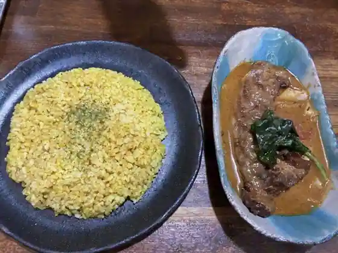
Miyoshi Kare E.
ベーカリーミラベル
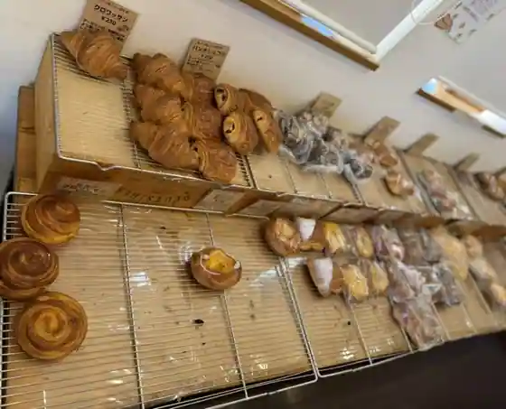
Bakery Miraberu
ナカシマ苑
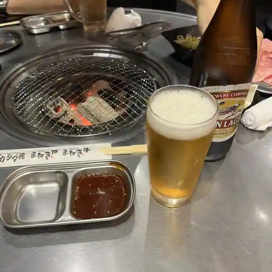
Nakashima En
舞楽雲
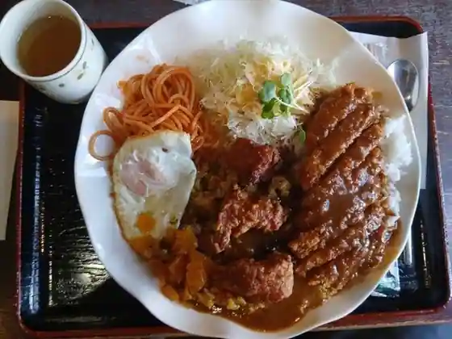
Bugaku Kumo
明日香 播磨店
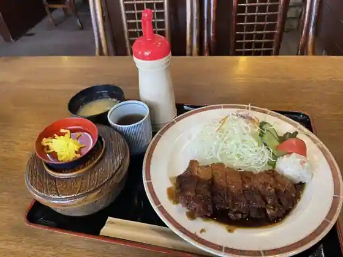
Asuka Harima
海鮮家
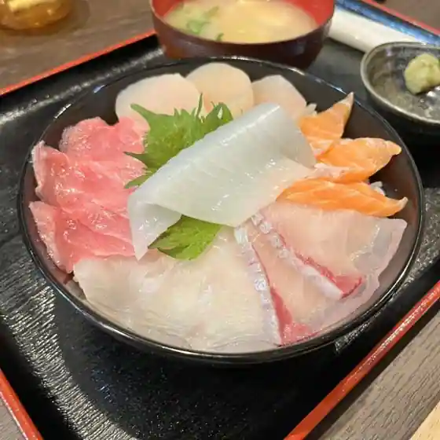
Kaisen Ie
BLOIS エスト店
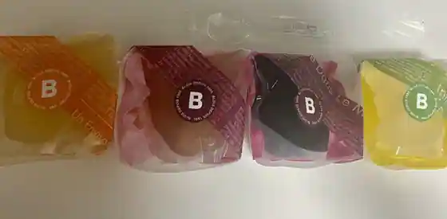
BLOIS Esuto
天馬らぁめん 土山駅前店
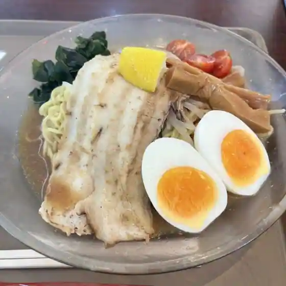
Tenma Ramen Tsuchiyama Ekimae
とんかつ 播 播磨店
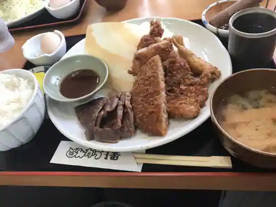
Tonkatsu Ban Harima
あお
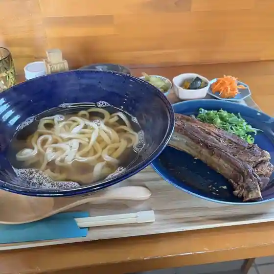
Ao
和おん
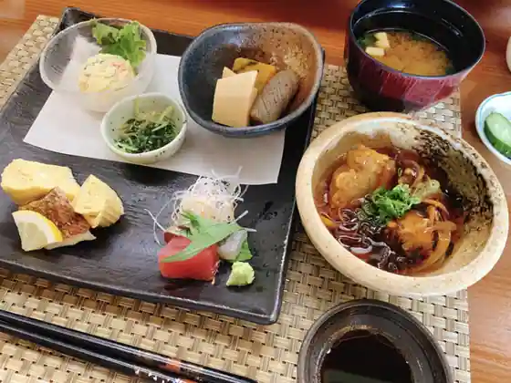
Wa On